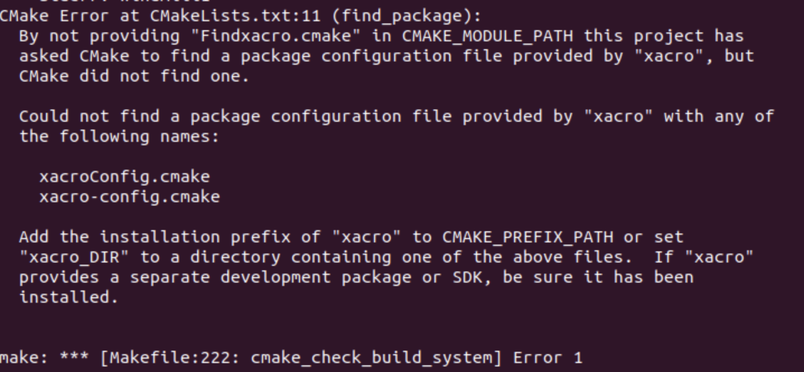
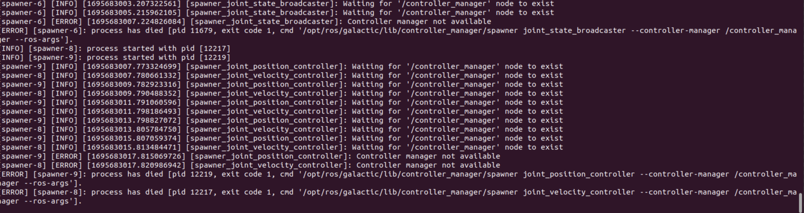
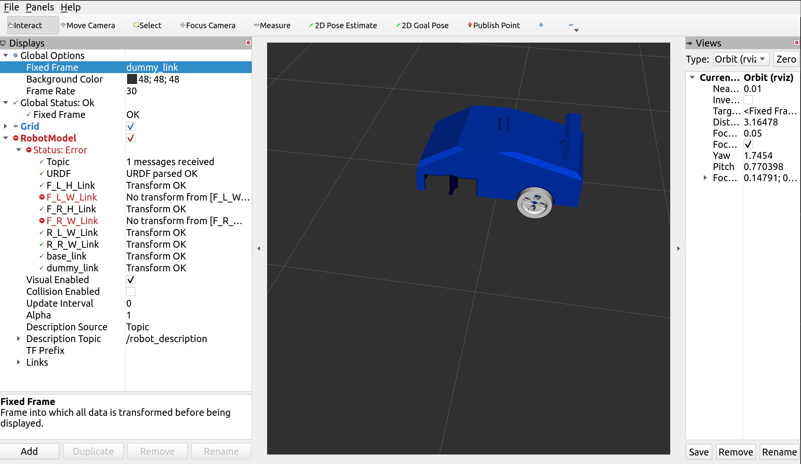
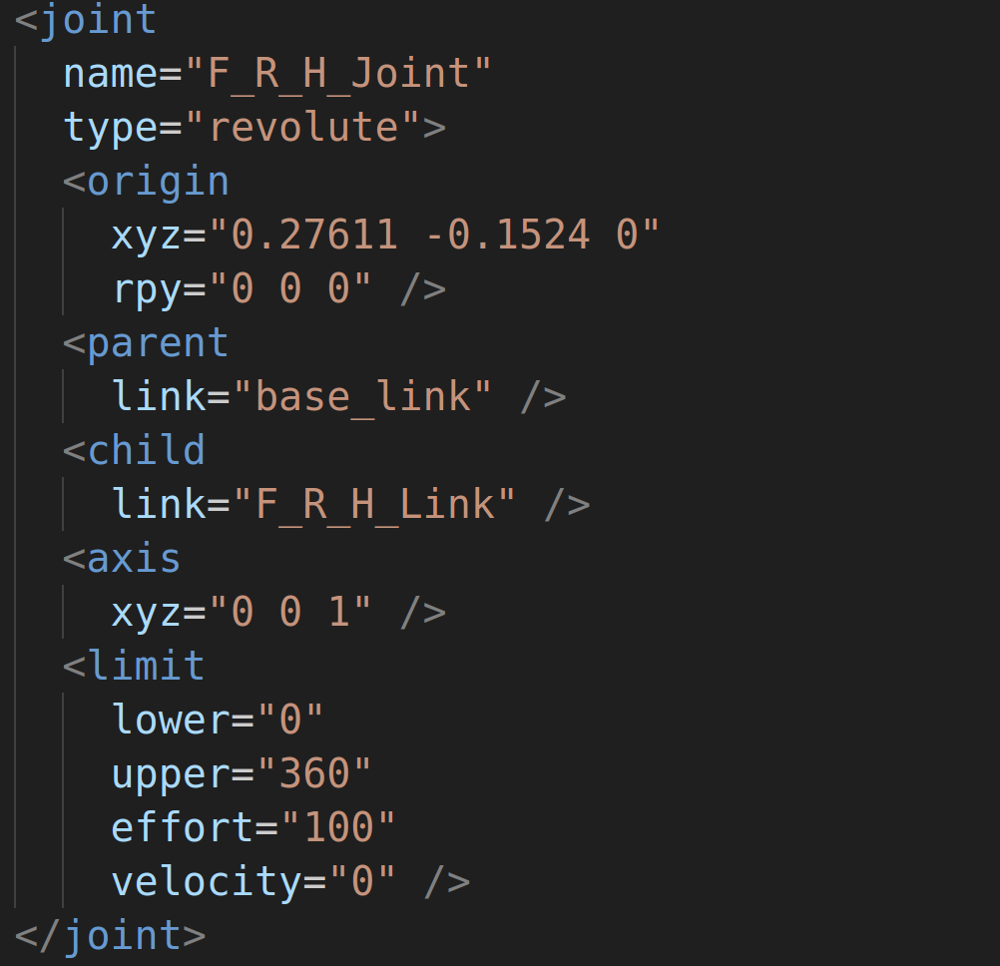

Frequently Faced Errors
1. Xacro Package is Not Installed
{kind=link}
If you face a error like above. You will need to install the xacro package. This can be done using the following commands.
sudo apt install ros-galactic-xacro
2. ROS Controller Manager Not Found
{kind=link}
If you are facing errors like above. You will need to install the controller manager explicitly. Use the below command.
sudo apt-get install ros-galactic-controller-manager
3. Transform Not Available
{kind=link}
If you’re encountering issues where your robot spawns correctly in Gazebo but you’re getting errors in RViz, particularly related to missing link transforms, it’s possible that the problem stems from inaccuracies in the axis definitions for the link joints within your URDF file.
# The axis might be either completely 0
<axis
xyz="0 0 0"/>
# The axis might have fractions
<axis
xyz="0.0000123 0.998289 0"/>
{kind=link}
The correct representation of axes should be in the form of whole numbers, as exemplified below.
{kind=link}
To resolve this issue, you will need to reconstruct your URDF by exporting the Solidworks Assembly once again. Please consult the software sessions for guidance on how to assign reference axes to the joints. Utilizing reference joints will rectify the problems associated with incorrect joint definitions, ensuring a error-free experience in RViz.
4. Subscribing to IMU Sensor data
Error
[WARN] [1698900148.627976887] [minimal_subscriber]: New publisher discovered on topic 'imu_plugin/out', offering incompatible QoS. No messages will be received from it. Last incompatible policy: RELIABILITY
You have to manually change your QOS profile in your script.
To do so:
Add:
from rclpy.qos import QoSProfile, ReliabilityPolicy, HistoryPolicy
Then, in your init function add:
qos_profile = QoSProfile(
reliability=ReliabilityPolicy.BEST_EFFORT,
history=HistoryPolicy.KEEP_LAST,
depth=10
)
Then, in your publisher, instead of queue size = 10, replace the argument in create_subscription with qos_profile:
#Subscribe to the 'imu_plugin/out' topic
self.imu_sub = self.create_subscription(Imu, 'imu_plugin/out', self.imu_callback, qos_profile)